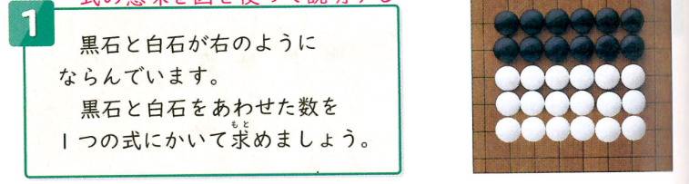
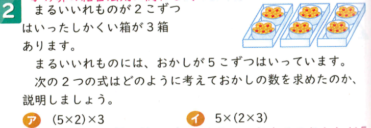

| 時数 | ページ | 目標 | 学習内容 | 主な評価基準 |
|---|---|---|---|---|
| 第1〜第4時 | P.118〜P.122 | ( )を用いた式や四則の混ざった式の計算の順じょを理解し、正しい順じょで計算できるようにする。[cite: 3] | ・( )のある式の順じょ ・＋, −, ×, ÷ の混ざった式の計算順じょ[cite: 3] |
(知技) 四則の混ざった計算の順じょを理解し、正しく計算することができる。[cite: 3] |
| 第5時 | P.123 | 計算の工夫（まとまりに着目した計算や法則）を用いて、工夫して計算する仕方を考える。[cite: 3] | ・計算の工夫（工夫して計算する基本）[cite: 3] | (思判表) 計算法則やまとまりに着目し、工夫して計算する方法を考えている。[cite: 3] |
| 第6時（本時） | P.124 | 図と式を結びつけ、どのように考えてつくった式かを筋道立てて説明できるようにする。[cite: 3] | ・図と式を結びつけて考える活動[cite: 3] | (思判表) 数量の関係を図と結びつけ、式の意味を分かりやすく説明している。[cite: 3] |
| 第7〜第8時 | P.125〜P.126 | 単元の学習内容の定着を確認し、理解を確実なものにする。[cite: 3] | ・たしかめよう ・ふりかえろう[cite: 3] |
(知技)(思判表)(態度) 単元の理解と活用力の確認。[cite: 3] |
| フェーズ | フロー（目安時間） | クエッション（30字以内） | アンサー | フィードバック |
|---|---|---|---|---|
| 導入（P1） | F1:既習のふりかえり（2分） | 前時までに勉強した計算の工夫にはどんなものがありましたか？ |
(A+) まとまりをつくって計算する (A+) ( )を使って1つの式にする (A+) たし算やかけ算の順番をかえる (A-) ひき算から順番に計算する |
(F+) よく覚えていますね！まとまりに着目するのがポイントでした。 (F-) 式の順じょのきまりをもう一度振り返ってみましょう。 |
| F2:主問題（2分） | 並んだ碁石の数を表す3つの式は、どう考えてつくられたのかな？ |
(A+) (2×3)×6 は大きなまとまりをつくっている (A+) 2×6+3×6 は黒と白を別々に数えている (A+) 6×2+6×3 は縦や横の列で分けている (A-) 適当に数字を組み合わせて計算している |
(F+) 式から考え方の違いを感じ取れていますね！素晴らしい。 (F-) 数字の意味を図と見比べてみましょう。 |
|
| F3:予想・見通し（3分） | 式の中の数字は、図のどこを表しているのだろう？ |
(A+) 2や3は小さなまとまりの個数 (A+) 6は全体にあるまとまりの数 (A+) 囲んでグループにするとわかりそう (A-) 全部でいくらか計算すればわかる |
(F+) 図に囲み線を入れると説明しやすそうですね！ (F-) 答えの数だけでなく、式の数字の意味に注目してみよう。 |
|
| 展開（P2） | F4:めあての提示（2分） | 今日のめあてを確認してノートに書きましょう。 |
(A+) めあてを黙読して正確に書く (A+) 図を使って説明することを意識する (A+) 準備をして書き始める (A-) めあてを書かずに計算だけする |
(F+) 見通しをもってめあてをしっかり書けましたね。 (F-) 今日のゴールとなる「めあて」をまず書こう。 |
| F5:自分で考え取り組む（5分） | 図に線を描き足して、式の意味を自分なりに説明してみよう。 |
(A+) 2×3のまとまりを6個囲んだ (A+) 黒石2×6と白石3×6に分けて足した (A+) 1列の中にある数を計算してからまとめた (A-) 計算して答えが30になったとだけ書いた |
(F+) 図と式を線の色でしっかり対応づけられていますね！ (F-) 答えだけでなく「なぜその式になるか」を図に書き込んでみよう。 |
|
| F6:全体交流（5分） | 友達の図の囲み方と自分の説明を比べてどう違いますか？ |
(A+) (2×3)は黒2個と白3個を1組として見ている (A+) 2×6+3×6は黒だけ・白だけを先にまとめている (A+) どの式も工夫して計算しやすくしている (A-) どの式も同じだから違いはない |
(F+) どこをひとまとめとして見たかの「視点の違い」に気づけましたね！ (F-) 式のカッコの位置や＋の位置に着目して図を見比べてみよう。 |
|
| F7:教師の説明（3分） | ( )を使うと、どのような良さがあるでしょうか？ |
(A+) ひとまとめにした考え方がひと目でわかる (A+) 先に計算したい部分をはっきり示せる (A+) 長い式になっても意味が伝わりやすい (A-) 計算の答えが大きくなる |
(F+) その通り！( )は考え方のまとまりを表す大切なマークです。 (F-) ( )があることで、どの部分を先に見たかわかるね。 |
|
| F8:主問題の解決（1分） | 3つの式はどれも正しく数を求められていましたか？ |
(A+) 見方はちがっても答えはすべて30になる (A+) どの考え方でも正しく求められる (A+) 自分のやりやすい考え方を選べる (A-) 1つの式しか正しいものがない |
(F+) 考え方が違っても、同じ答えにたどり着くのが算数の面白さですね。 (F-) 実際にそれぞれの式を計算して確認してみよう。 |
|
| F9:学習内容のまとめ（3分） | 図と式を結びつけると、どんな良いことがありますか？ |
(A+) どのように考えたかがよくわかる (A+) 友達に自分の考えを説明しやすい (A+) 式の意味が頭の中でイメージできる (A-) 早く計算が終わるようになる |
(F+) 素晴らしいまとめです！「どのように考えたか」が伝わるね。 (F-) 自分の考えを人に伝えるときの効果を考えてみよう。 |
|
| F10:適用問題（10分） | アとイの式は、箱やお菓子のどういう集まりを見ていますか？ |
(A+) アは1箱に入ったお菓子の数を先に求めている (A+) イは箱全体の中にあるいれものの数を先に求めている (A+) アは(5×2)で1箱10個、イは(2×3)で全部で6個のいれもの (A-) どちらも同じ順番で計算している |
(F+) 式の( )の中が「何を意味しているか」を正確に説明できましたね！ (F-) カッコの中の「5×2」と「2×3」が何を表すか絵を描いて考えてみよう。 |
|
| 終末（P3） | F11:教師の説話（3分） | プログラミングでも式の順じょが使われているのを知ってる？ |
(A+) ロボットの命令も順番が大事そう (A+) カッコを使って命令をまとめるのかな (A+) 順序が変わると違う動きになりそう (A-) パソコンは計算の順番を気にしない |
(F+) その通り！コンピューターも算数の「計算の順じょ」のルールで動いているんだよ。 (F-) 命令の順番が違うとゲームがバグっちゃうのと同じだよ。 |
| F12:本時のふりかえり（7分） | 今日の学習で、図と式を関連づけて分かったことを書こう。 |
(A+) 式の( )が図の囲みと同じだとわかった (A+) 友達の図を見ることで式の意味がすぐ納得できた (A+) 適用問題でも( )の意味を考えて説明できた (A-) 難しくて何も分からなかった |
(F+) 自分の言葉で学びの深まりをしっかりとふり返れていますね！ (F-) 「どこがわかりやすくなったか」を一つ見つけて書いてみよう。 |

